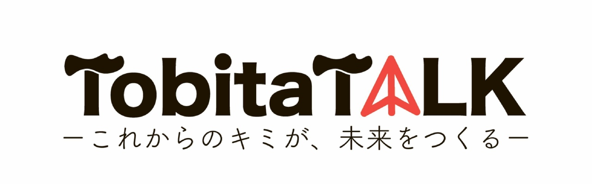

過去ー現在ー未来は1つの線で繋がっています。
TobitaTALKがお届けしたいのは、未来を担う若者の人生ストーリーと彼らの想い・メッセージです。
全くことなる人生を歩んできた彼らに共通しているのは、「留学」というキーワード。
それぞれの道を進みながら海外へトビタった経験を持つ彼らが、
等身大の「現在」、そしてその先に続く「未来」を宣言する動画を見ていただき、
皆様も一緒にストーリーの続きを思い描いていただければと思います。
紙飛行機は自分自身。多くの発見や経験が紙飛行機にたくさんの色をつけ、
今よりももっと遠くに、次のステージに向かって飛んでいく様を表現しました。
また、本イベントのトークがSNSなどを通じて遠くまで届くように
という願いも込められています。
文部科学省 官民協働海外留学創出プロジェクト「トビタテ！留学JAPAN」プロジェクトディレクター
1970年、横浜生まれ。幼少期をアルゼンチン、高校時代をブラジルで過ごす。上智大学卒業後、伊藤忠商事株式会社に入社し、アジア等でODAプロジェクトを手がける。2000年に株式会社ウィル・シードを設立、企業及び学校向けの体験型・参加型の教育プログラムを提供。世界経済フォーラム（ダボス会議）「ヤング・グローバル・リーダーズ2009」選出。ダボス会議で世界の劇的な変化、日本人のプレゼンスの弱さ、同世代のリーダーの優秀さなどに課題感を感じ、官民協働、社会総がかりで意欲と能力のある若者の海外留学を促進する「トビタテ！留学JAPAN」を立ち上げる。以降、プロジェクトディレクターとして、留学が当たり前の文化の創出、および支援企業・大学・派遣留学生同士のグローバル人材育成コミュニティの形成に尽力している。その他、中央教育審議会委員、Table for two理事、MORIUMIUS理事等。
文部科学省は、意欲と能力のあるすべての日本の若者が、海外留学をはじめとして新しいチャレンジに自ら一歩を踏み出す機運を醸成することを目的として、平成25年10月より留学促進キャンペーン「トビタテ！留学JAPAN」を開始しました。この取組みは、政府だけでなく、社会全体で海外留学の促進を取り組むことにより大きな効果が得られるものと考え、各分野で活躍されている方々や民間企業からのご支援やご寄附などにより、官民協働で「グローバル人材育成コミュニティ」を形成し、将来世界で活躍できるグローバル人材を育成します。これらの取組みにより、「日本再興戦略〜JAPAN is BACK」（平成25年6月14日閣議決定）において掲げた目標である、東京オリンピック・パラリンピック競技大会が開催される2020年までに大学生の海外留学12万人（現状6万人）、高校生の海外留学6万人（現状3万人）への留学者数倍増を目指します。
©TobitaTALK
Designed by Hiroshi Sakuma